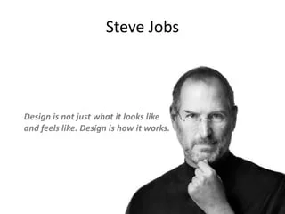

steve Jobs
1955-2011

BIOGRAPHY
Steven Paul "Steve Jobs was an American information technology entrepreneur and Irwentor. He was the cofounder, chairman, and CEO of Apple Inc, CEO and largest shareholder of Pixar Animation Studios; and founder, chairman, and CEO of NeXT Inc. Jobs is widely recognized as a pioneer of the microcomputer revolution of the 1970s, along with Apple co-founder Steve Wozniak. "Creatise entrepreneur whose passion for perfection and ferocious drive revolutionized six industries: personal computers, animated movies, music, phones, tablet computing, and digital publishing,
Made with Apple